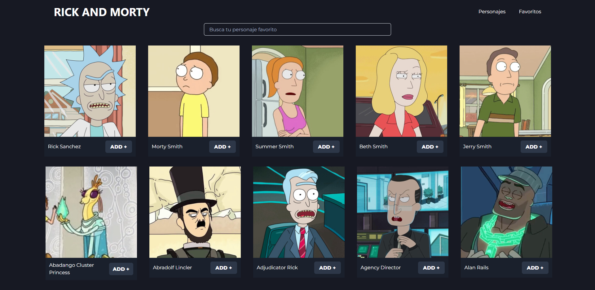

Aplicación de gastos mensuales, la misma fue creada en REACT JS. Los gastos pueden ser filtrados, eliminados o editados deslizando la tarjeta para los costados.
SOBRE MI
Mi nombre es Nicolás Cajaraville, soy desarrollador Frontend
Junior y me encuentro buscando mi primera experiencia laboral
dentro de una empresa.
Me concidero una persona que pone a disposición todas sus
capacidades y habilidades para cumplir con las tareas asignadas de
forma eficiente y responsable. Por otra parte, es mi objetivo
cumplir con las metas establecidas y superarlas, adquirir
experiencia y nuevos conocimientos.
Y actualmente me encuentro finalizando el curso de React JS en la
plataforma de Coder House.
TECNOLOGÍAS

HTML

CSS

BOOTSTRAP

NPM
MIS PROYECTOS

App creada en REACT JS, consumiendo la API de RICK AND MORTY. En la misma tenemos una barra de busqueda para encontrar un personaje en especificio, un paginador y podemos también agregar y quitar personajes a favoritos.
Prime Burguer es un proyecto sobre una hamburgueseria ficticia realizada para el curso de desarrollo web de Coder House. El mismo fue desarrollado en HTML, SASS Y BOOTSTRAP
APP creada en REACT. En la misma es posible crear tareas, editarlas finalizarlas y borrarlas.
Clon de twitter desarrollado en HTML, SASS Y JAVASCRIPT.
En
la misma una vez que se comienza a escribir se habilita el boton
para twittear y también se simulan los me gusta, comentarios y
retweet.
También dando click sobre los tweets podemos borrarlos.
App desarrollada en REACT. La misma nos permite agendar turnos. Dichos turnos pueden ser editados y eliminados con sus respectivos botones.
App desarrollada en el curso de Javascript de Coder House. Se
realiza la simulacion de un home banking.
La misma fue creada con HTML, SASS, BOOTSTRAP Y JAVASCRIPT.
Debemos crear un usuario para poder ingresar a la app.